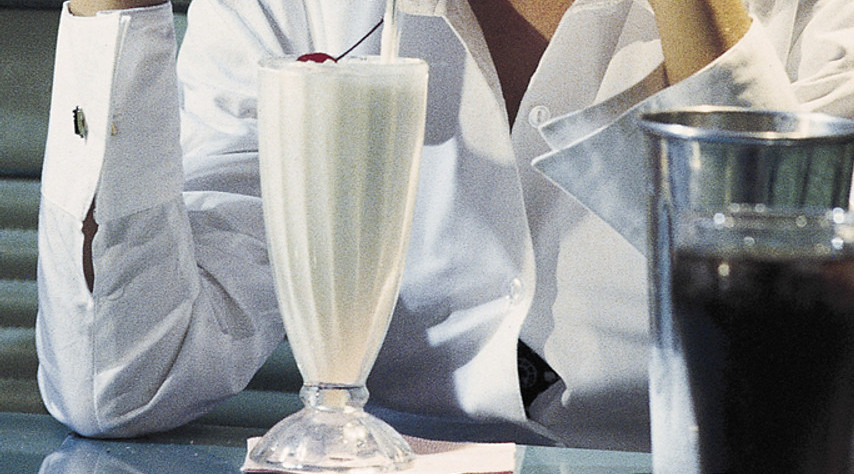

$5 Dollar Milkshake

The $5 milkshake isn't just a beverage; it's a revelation that could even surprise your husband's hitman. Picture this: a classic vanilla milkshake,
like the ones in diners and restaurants, but with a twist. What makes it truly special? It's not delivered by a dancing waiter or served with a side of
celebrity gossip. Nope, it's exclusive—available only at the swanky Jack Rabbit Slim's.
Clearly, the secret ingredient is not vanilla—it's the price tag.
Ingredients:
- 1 cup whole milk
- 2 cups vanilla ice cream
- 1/2 teaspoon vanilla extract
- Whipped cream (optional)
- Maraschino cherry for garnish (optional)
- No bourbon or nothing
Instructions
- In a blender, combine 2 cups of vanilla ice cream and 1 cup of whole milk.
- Blend the ice cream and milk until you achieve a smooth and creamy consistency.
- Add 1/2 teaspoon of vanilla extract to the blender and blend briefly to incorporate the flavor.
- Pour the milkshake into a tall glass.
- If desired, top the milkshake with whipped cream and garnish with a maraschino cherry.
- Grab a straw, give it a good stir if you've added toppings, and enjoy your $5 milkshake!
The legendary $5 milkshake—a beverage so exclusive it could probably win an Oscar. The kind that makes you question if you've
been overpaying for all those cents-off coupons.